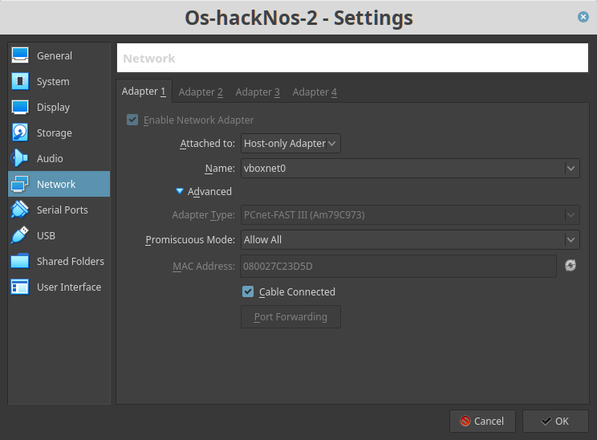
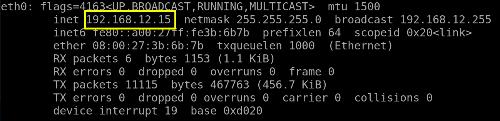
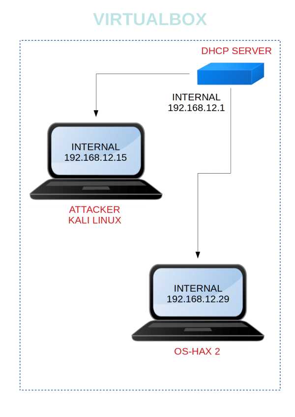

Os-Hax: 2.1
Penetrating Methodologies
▸ 1. Scan Network
▸ 2. Finding Services and Ports
▸ 3. Enumerate Directory
▸ 4. Wpscan
▸ 5. Local File Inclusion POC
▸ 6. Password Cracking
▸ 7. SSH
▸ 7.1 Looking for users
▸ 7.2 Cracking password with John
▸ 7.3 Switch users and getting flags
Difficulty: Intermediate
Flag: 2 Flag first user and second root
Learning: Web Application | Enumeration | Password Cracking
Reference: https://www.vulnhub.com/entry/hacknos-os-hacknos-2,403/
Download (Mirror): https://download.vulnhub.com/hacknos/Os-hackNos-2.1.ova
Download (Torrent): https://download.vulnhub.com/hacknos/Os-hackNos-2.ova.torrent
Install the machine on VirtualBox:
1. Download the file.
2. On Virtualbox choose File->Import Appliance.
3. Select the file “ova”.
4. Accept to import.
Virtual Machine Network Settings
Both Machines on “Host-only Adapter”.

Watch your Machine IP
Output:

Diagram

 Index
Index